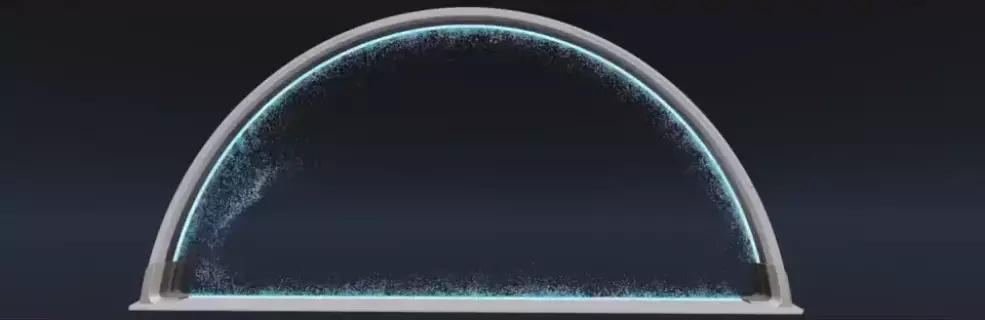
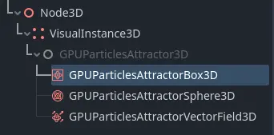
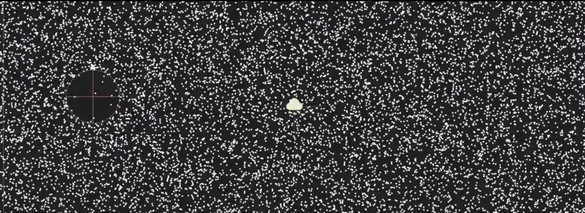
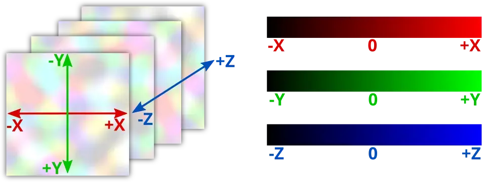

Attractor cho hạt 3D

Particle attractor là các node tác dụng một lực lên tất cả các hạt trong phạm vi của chúng. Chúng kéo các hạt lại gần hoặc đẩy chúng ra xa tùy theo hướng của lực đó. Có ba loại attractor: class_GPUParticlesAttractorBox3D, class_GPUParticlesAttractorSphere3D và class_GPUParticlesAttractorVectorField3D. Bạn có thể tạo instance cho chúng khi đang chạy và thay đổi thuộc tính của chúng từ code gameplay; bạn thậm chí có thể tạo hoạt ảnh và kết hợp chúng để có các hiệu ứng hút phức tạp.
Ghi chú
Particle attractor chưa được triển khai cho hệ thống hạt 2D.
Điều đầu tiên bạn phải làm nếu muốn dùng attractor là bật thuộc tính Attractor Interaction trên ParticleProcessMaterial. Hãy làm điều này cho mọi hệ thống hạt cần phản ứng với attractor. Như hầu hết các thuộc tính trong Godot, bạn cũng có thể thay đổi thuộc tính này khi đang chạy.
Thuộc tính chung

Các thuộc tính chung của attractor
Có một số thuộc tính mà bạn có thể tìm thấy trên mọi attractor. Chúng nằm trong mục GPUParticlesAttractor3D trong Inspector.
Strength điều khiển độ mạnh của lực attractor. Giá trị dương kéo các hạt lại gần tâm attractor, còn giá trị âm đẩy chúng ra xa.
Attenuation điều khiển mức suy giảm độ mạnh trong vùng ảnh hưởng của attractor. Mỗi particle attractor đều có một ranh giới. Độ mạnh của nó yếu nhất ở viền ranh giới này và mạnh nhất ở tâm. Các hạt nằm ngoài ranh giới hoàn toàn không bị attractor ảnh hưởng. Đường cong suy giảm điều khiển cách độ mạnh giảm dần theo khoảng cách đó. Một đường thẳng nghĩa là độ mạnh tỷ lệ với khoảng cách: nếu một hạt nằm ở giữa ranh giới và tâm, độ mạnh của attractor sẽ bằng một nửa so với ở tâm. Các hình dạng đường cong khác nhau thay đổi tốc độ tăng tốc của các hạt về phía attractor.

Các biến thể tăng độ mạnh: đều đặn theo khoảng cách tới attractor (trái), nhanh ở viền ranh giới và chậm ở tâm (giữa), chậm ở ranh giới và nhanh ở tâm (phải).
Thuộc tính Directionality thay đổi hướng mà các hạt bị kéo về. Ở giá trị 0.0, không có tính định hướng, nghĩa là các hạt bị kéo về tâm attractor. Ở 1.0, attractor có tính định hướng hoàn toàn, nghĩa là các hạt sẽ bị kéo dọc theo trục -Z cục bộ của attractor. Bạn có thể thay đổi hướng toàn cục bằng cách xoay attractor. Nếu Strength âm, các hạt sẽ bị kéo dọc theo trục +Z thay vào đó.

Không định hướng (trái) so với định hướng hoàn toàn (phải). Hãy để ý cách các hạt di chuyển dọc theo trục Z cục bộ của attractor.
Thuộc tính Cull Mask điều khiển những hệ thống hạt nào bị một attractor ảnh hưởng, dựa trên visibility layer của từng hệ thống. Một hệ thống hạt chỉ bị attractor ảnh hưởng nếu có ít nhất một visibility layer của hệ thống đó được bật trong cull mask của attractor.
Box attractor

Box attractor trong danh sách node
Box attractor có vùng ảnh hưởng hình hộp. Bạn điều khiển kích thước của chúng bằng thuộc tính Extents. Extents của hộp luôn đo một nửa các cạnh của vùng bao, vì vậy giá trị (X=1.0,Y=1.0,Z=1.0) tạo ra một hộp có vùng ảnh hưởng rộng 2 mét ở mỗi cạnh.
Để tạo một box attractor, hãy thêm một node con mới vào scene và chọn GPUParticlesAttractorBox3D từ danh sách các node có sẵn. Bạn có thể tạo hoạt ảnh cho vị trí của hộp hoặc gắn nó vào một node đang di chuyển để có hiệu ứng sinh động hơn.

Một box attractor với giá trị độ mạnh âm rẽ đôi một trường hạt khi nó di chuyển xuyên qua.
Attractor hình cầu

Sphere attractor trong danh sách node
Sphere attractor có vùng ảnh hưởng hình cầu. Bạn điều khiển kích thước của chúng bằng thuộc tính Radius. Trong khi box attractor không nhất thiết phải là khối lập phương hoàn hảo, sphere attractor sẽ luôn là hình cầu: bạn không thể đặt chiều rộng độc lập với chiều cao. Nếu bạn muốn dùng sphere attractor cho các hình dạng kéo dài, bạn phải thay đổi Scale của nó trong mục Node3D của attractor.
Để tạo một sphere attractor, hãy thêm một node con mới vào scene và chọn GPUParticlesAttractorSphere3D từ danh sách các node có sẵn. Bạn có thể tạo hoạt ảnh cho vị trí của hình cầu hoặc gắn nó vào một node đang di chuyển để có hiệu ứng sinh động hơn.

Một sphere attractor với giá trị độ mạnh âm rẽ đôi một trường hạt khi nó di chuyển xuyên qua.
Vector field attractor

Vector field attractor trong danh sách node
Trường vector là một vùng 3D chứa các vector được đặt trên một lưới. Mật độ lưới điều khiển số lượng vector và khoảng cách giữa chúng. Mỗi vector trong trường vector chỉ theo một hướng cụ thể. Các hướng này có thể hoàn toàn ngẫu nhiên hoặc được căn chỉnh theo cách tạo thành các mẫu và đường đi riêng biệt.
Khi các hạt tương tác với một trường vector, hướng chuyển động của chúng thay đổi để khớp với vector gần nhất trong trường. Khi một hạt tiến gần đến vector tiếp theo trong trường, nó đổi hướng để khớp với hướng của vector đó. Tốc độ của hạt phụ thuộc vào độ dài của vector.
Giống như box attractor, vector field attractor có vùng ảnh hưởng hình hộp. Bạn điều khiển kích thước của chúng bằng thuộc tính Extents, trong đó giá trị (X=1.0,Y=1.0,Z=1.0) tạo ra một hộp có vùng ảnh hưởng rộng 2 mét ở mỗi cạnh. Thuộc tính Texture nhận một texture 3D, trong đó mỗi pixel biểu diễn một vector, với màu của pixel được hiểu là hướng và độ lớn của vector.
Ghi chú
Khi dùng một texture làm trường vector, có hai kiểu chuyển đổi mà bạn cần lưu ý:
Tọa độ texture được ánh xạ vào giới hạn của attractor. Hình bên dưới cho thấy phần nào của texture tương ứng với phần nào của thể tích trường vector. Ví dụ, nửa dưới của texture ảnh hưởng đến nửa trên của vector field attractor vì
+Yhướng xuống trong không gian UV của texture, nhưng lại hướng lên trong không gian thế giới của Godot.Giá trị màu của pixel được ánh xạ thành các vector hướng trong không gian. Hình bên dưới cho cái nhìn tổng quan. Vì hạt có thể di chuyển theo hai hướng trên mỗi trục, nửa dưới của dải màu biểu diễn giá trị hướng âm, còn nửa trên biểu diễn giá trị hướng dương. Vì vậy, một pixel màu vàng
(R=1,G=1,B=0)ánh xạ thành vector(X=1,Y=1,Z=-1), trong khi màu xám trung tính(R=0.5,G=0.5,B=0.5)hoàn toàn không tạo ra chuyển động nào.

Để tạo một vector field attractor, hãy thêm một node con mới vào scene và chọn GPUParticlesAttractorVectorField3D từ danh sách các node có sẵn. Bạn có thể tạo hoạt ảnh cho vị trí của attractor hoặc gắn nó vào một node đang di chuyển để có hiệu ứng sinh động hơn.
Mẹo
Nếu bạn không có công cụ bên ngoài để tạo texture trường vector, bạn có thể dùng một NoiseTexture3D có gắn Color Ramp làm texture trường vector. Bạn có thể chỉnh Color Ramp để điều chỉnh mức độ mỗi tọa độ bị ảnh hưởng bởi trường vector.

Hai hệ thống hạt chịu ảnh hưởng của cùng một vector field attractor. Nhấn vào đây để tải texture 3D.